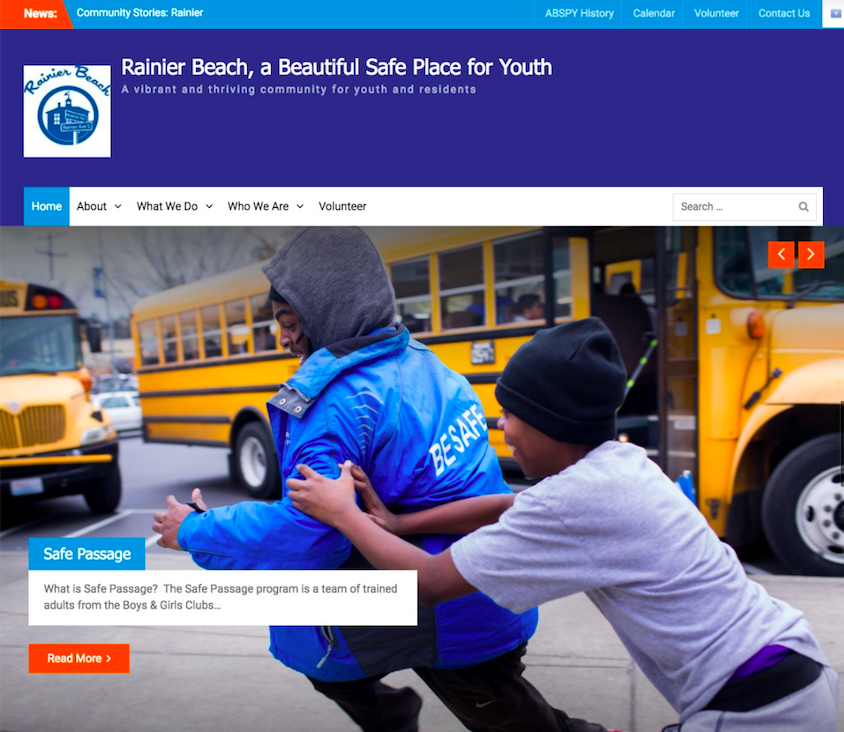
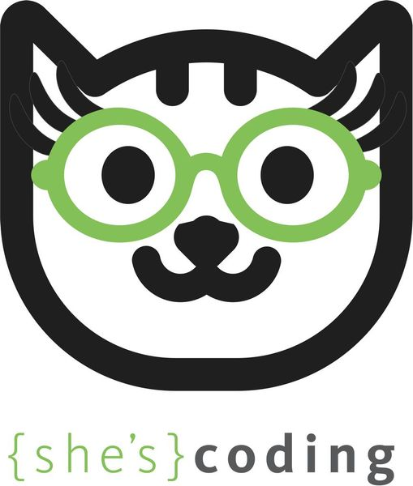
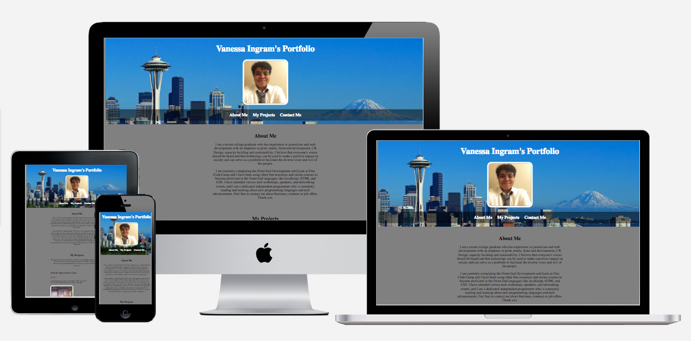

Latest WordPress Project
Company: A Beautiful Safe Place for Youth
Technology: HTML, CSS
Project type: Professional Project
Description: The is a WordPress website that I re-designed for a non-profit in the fall of 2017. The Project Director, Barb Biondo requested and approved this design. Note: Despite the approval of the previous Director, as of 2018 the new ABSPY Project Coordinator, Jenny Frankl has yet to launch the finished product.
She's Coding Project
Company: She's Coding
Technology: HTML, CSS, git, github
Project type: Professional, Volunteer
Description: A group project to re-design the front-end for the she's coding website. It involved wire-framing, user-experience, user-interface, and team collaboration remotely and in-person.
E-Commerce Website

Company: Floodgate Academy, Seattle, WA
Technology: HTML, CSS, git, github
Project type: Floodgate Academy Project
Description: This is a basic e-commerce website that I created while using an image of the desired design and coding the front-end from scratch.
Shay Howe

Technology: HTML, CSS
Project type: Floodgate Academy Project
Description: A website that I created after reading and following the detailed lessons and intructions provided by the Shaye Howe HTML tutorial. I made a page for each stage of the website to demonstrate my understanding
Rock, Paper, Scissors

Technology: JavaScript, HTML, CSS
Project type: Personal Project
Description: This is a rock paper scissors game that the user can play with the computer. I created this program after learning JavaScript to practice and demonstrate my skills.
irock

Technology: JavaScript, HTML, CSS
Project type: Personal Project
Description: A rudimentary JavaScript program that I created when I first began to learn programming
Song Time Calculator

Technology: Ruby
Project type: Personal Project
Description: A program I created to understand the ruby programming language.
Previous Portfolio
Technology: HTML, CSS, git, github
Project type: Personal Project
Description: The first portfolio I made when I began to pursue programming as a career and hard coded my first portfolio after learning HTML and CSS from college courses, Journalistic Design Principles, Free Code Camp, Codecademy, Lynda, workshops, meetups and many other forms of education.